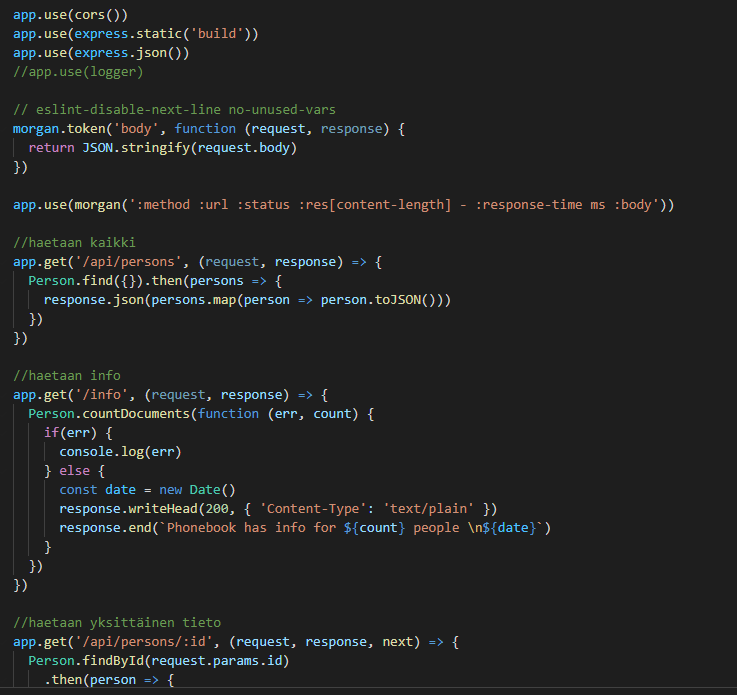
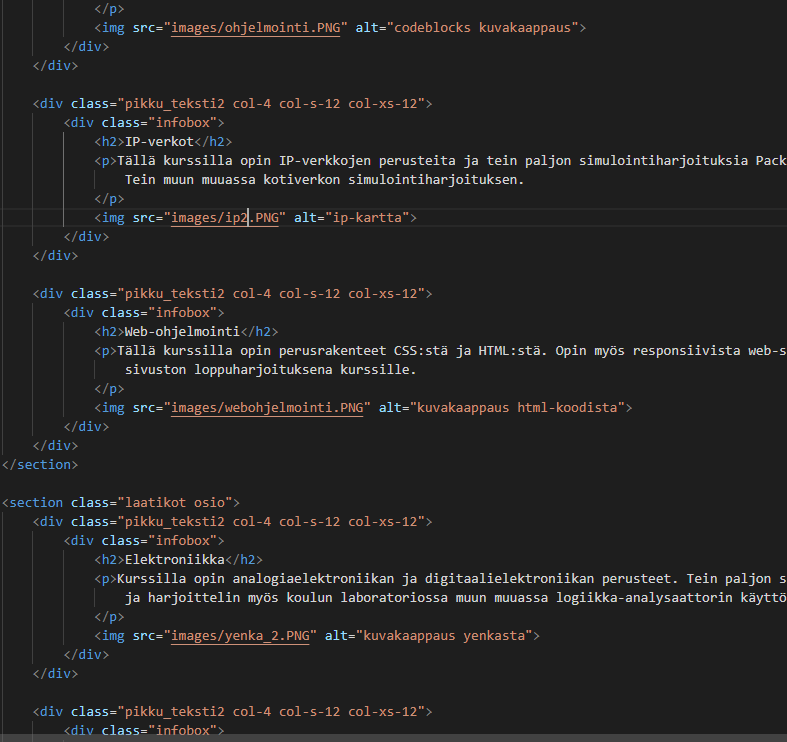

Full stack
Tämä kurssi on Helsingin avoimen yliopiston kautta suoritettava kurssi. Kurssin laajuuden saa itse valita 3-8 opintopisteen väliltä. Suoritin kesällä 3 opintopistettä, mutta aion jatkaa kurssin loppuun asti. Tähän mennessä olen oppinut tekemään React-sovelluksia ja käyttämään Nodea sekä npm-työkalua. Lopuksi pääsin myös tekemään backend-toiminnallisuutta Expressin avulla.
Web-ohjelmointi
Kurssilla opin miten sovelluksesta saadaan tehtyä dynaaminen. Kurssilla käytiin läpi Javascriptin avulla toteutettavia toiminnallisuuksia. Lopputyössä pääsin laajentamaan vielä osaamistani tekemällä sovelluksen, joka näyttää reaaliaikaisena Tampereen kaupungin bussiliikenteen kartalla. Hyödynsin työssä Tampereen liikennelaitoksen tarjoamaan REST APIa. Harjoitustyö ja raportti löytyy kokonaisuudessaan täältä

Web-tekniikat
Tällä kurssilla opin perusrakenteet CSS:stä ja HTML:stä. Opin suunnittelemaan sivustot responsiivisiksi siten, että ne skaalautuvat käyttäjän päätelaitteen ja näytön koon mukaisesti. Tämän juuri katselemasi sivuston tein alunperin loppuharjoituksena web-ohjelmoinnin kurssille. Sen jälkeen olen lisännyt kurssikuvauksia opintojen edetessä.
